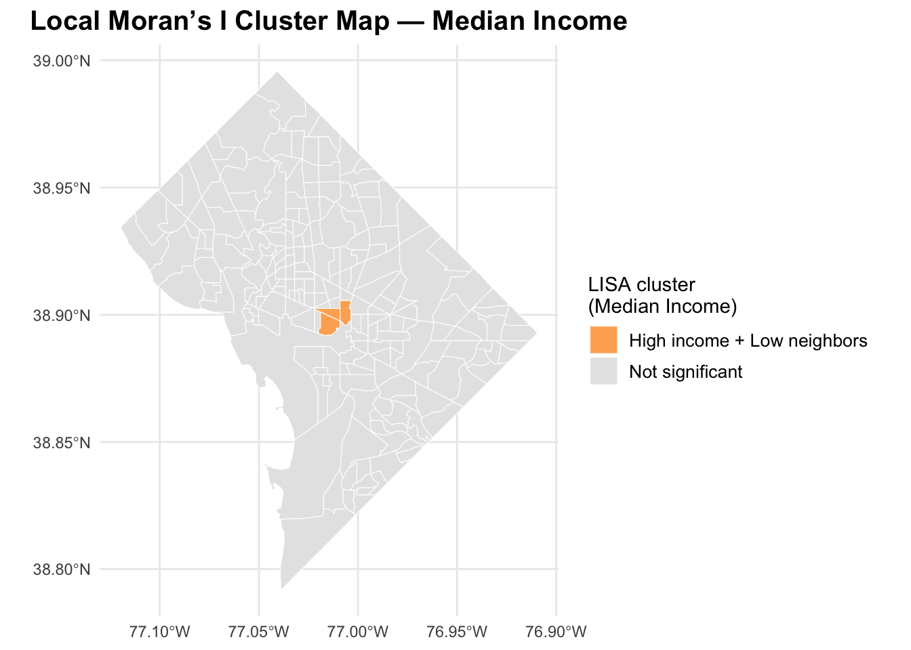
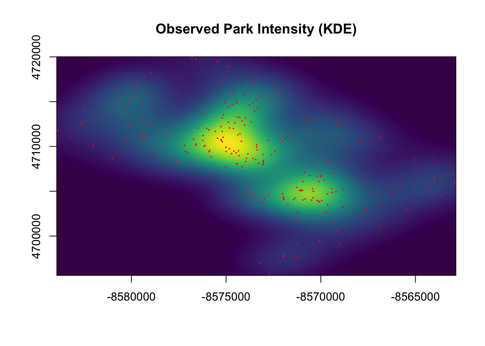

Green Space Inequality via Spatial Income Patterns.
Author
Xun Lei
1 Introduction
Urban green space—such as parks, gardens, and recreational areas—is widely recognized as a critical component of environmental quality and public well-being. Access to green space has been linked to improved physical and mental health, greater opportunities for recreation, lower levels of urban heat exposure, and enhanced social cohesion within communities. As cities grow and densify, the equitable distribution of parks becomes a central concern in urban planning and environmental justice.
Many studies in environmental justice have found that socially advantaged neighborhoods often enjoy better access to ecological and recreational amenities, while lower-income communities may face “green space deficits.” These disparities can contribute to unequal health outcomes, reduced quality of life, and structural inequities embedded within the urban landscape.
Washington, D.C. provides a compelling case study for examining such spatial inequalities. The city exhibits substantial variation in median household income across its census tracts, with pronounced socio-economic differences between Northwest D.C. and the neighborhoods east of the Anacostia River. At the same time, the District maintains a large inventory of parks and green spaces, making it an ideal environment for studying whether these amenities are evenly—or unevenly—distributed.
This project investigates the spatial distribution of parks in Washington, D.C. and evaluates whether higher-income neighborhoods receive disproportionately greater access to green space. Specifically, the study focuses on first-order spatial properties through the estimation of an inhomogeneous intensity function and employs simulation-based hypothesis testing to assess whether observed patterns differ significantly from those expected under a population-driven null model.
By integrating open-source geospatial data with point-pattern methods from spatial statistics, this research contributes to understanding the extent of environmental inequality in the nation’s capital and highlights broader implications for urban planning and equitable resource allocation.
2 Literature Review
Studies in environmental justice consistently show that access to parks and green space is often uneven across socio-economic groups. Research has found that higher-income neighborhoods typically have more and higher-quality green amenities, while lower-income communities face green space deficits (Wolch et al. 2014). Similar patterns have been documented in several U.S. cities, including evidence that park access strongly correlates with neighborhood wealth and historic patterns of urban inequality (Boone et al. 2009).
This project builds on that literature by examining whether Washington, D.C. exhibits similar income-based disparities in the spatial distribution of parks.
3 Methodology
This study evaluates whether park access in Washington, D.C. exhibits income-based spatial inequality using a combination of exploratory spatial analysis, spatial autocorrelation statistics, and simulation-based hypothesis testing. The methodological workflow follows the first-order spatial analysis framework emphasized in GIS for Spatial Data Science.
3.1 1. Data Sources and Preprocessing
Two primary datasets were used:
Park locations from OpenStreetMap (OSM), represented both as polygons and as centroid points.
Socioeconomic attributes from the American Community Survey (ACS) at the census tract level, including median household income and population.
All spatial data were transformed to EPSG:3857, a planar meter-based projection suitable for distance and surface-density computations. For each census tract, park areas were intersected and aggregated to compute:
Total park area per tract (sqm)
Park density: park area per capita \[
\text{park density} = \frac{\text{park area}}{\text{population}}
\]
These variables provide the socio-economic and environmental covariates necessary for subsequent analysis.
4 Exploratory Data Analysis (EDA)
Moran I test under randomisation
data: tracts$median_income
weights: lw
Moran I statistic standard deviate = -0.82782, p-value = 0.7961
alternative hypothesis: greater
sample estimates:
Moran I statistic Expectation Variance
-0.035478979 -0.004878049 0.001366476
Moran I test under randomisation
data: tracts$park_density
weights: lw
Moran I statistic standard deviate = 8.0735, p-value = 3.416e-16
alternative hypothesis: greater
sample estimates:
Moran I statistic Expectation Variance
0.295826424 -0.004878049 0.001387258

Local Moran’s I Cluster Map — Median Income
4.1 Local Moran’s I (LISA) Analysis — Median Income
Local Moran’s I reveals that the vast majority of census tracts in Washington, D.C. do not exhibit statistically significant spatial autocorrelation in median household income. This is consistent with the global Moran’s I result (I = –0.035, p = 0.796), which indicates no significant clustering of high- or low-income areas at the city scale.
Only a small number of tracts appear as High–Low outliers, meaning that these tracts have relatively high incomes while being surrounded by lower-income neighbors. These patterns correspond to localized gentrifying areas (e.g., Navy Yard, NoMa, parts of Capitol Hill), but do not represent citywide spatial clustering.
No significant High–High (wealth clusters) or Low–Low (poverty clusters) regions were detected once statistical significance (p < 0.05) was applied.
5 Hypothesis Testing

Observed Park Intensity (KDE)
Significant Deviations from CSR (Monte Carlo Envelope)
Welch Two Sample t-test
data: high_income_grid$obs_intensity and low_income_grid$obs_intensity
t = 18.883, df = 36804, p-value < 2.2e-16
alternative hypothesis: true difference in means is not equal to 0
95 percent confidence interval:
3.554112e-10 4.377412e-10
sample estimates:
mean of x mean of y
2.078248e-09 1.681672e-09
The kernel density estimation (KDE) map shows two clear concentration zones where parks are densely located. These high-intensity areas reflect clusters of parks in central and northwest Washington, D.C. This provides initial visual evidence that park locations are not uniformly distributed across space.
5.1.2 2. CSR Envelope Test (999 Simulations)
By comparing the observed intensity surface with 999 Monte Carlo simulations under Complete Spatial Randomness (CSR), we identify large regions where observed park density is significantly higher than expected under random distribution. These areas (highlighted in green) confirm strong clustering of park locations, rejecting the CSR null hypothesis.
5.1.3 3. Income Surface (Mapped onto KDE Grid)
Each KDE grid point is matched to its nearest census tract income. This map reveals a strong spatial divide: high-income zones are concentrated west of the Anacostia River, while lower-income regions occupy the eastern side. This step allows us to statistically connect income and park intensity.
5.1.4 4. Correlation: Park Intensity vs Income
A Pearson correlation test shows:
Correlation coefficient: 0.142
p-value < 2.2e-16
This indicates a small but statistically significant positive association between park intensity and neighborhood median income. Higher-income areas tend to have slightly higher park density.
5.1.5 5. High-Income vs Low-Income Comparison
A Welch two-sample t-test comparing KDE intensity between high- and low-income areas finds:
High-income mean intensity: 2.08×10⁻⁹
Low-income mean intensity: 1.68×10⁻⁹
p-value < 2.2e-16
This demonstrates a significant difference: high-income neighborhoods have measurably greater park density.
5.2Summary of Findings
✔️ Park locations are significantly clustered, not random, based on CSR simulations.
✔️ Income and park density are positively correlated, though the effect size is modest.
✔️ High-income areas have higher average park intensity than low-income areas.
✔️ Both correlation and t-test results are highly significant, reinforcing evidence of inequity.
5.2.1Conclusion
Across multiple formal statistical tests, there is strong evidence of spatial inequity in park access. High-income neighborhoods in Washington, D.C. benefit from significantly greater park density compared to low-income areas. This supports the hypothesis that the spatial distribution of green space in the city reflects existing patterns of economic inequality.
6 Discussion
The analysis reveals a nuanced picture of green space inequality in Washington, D.C.
First, spatial autocorrelation tests show that median household income does not exhibit significant spatial clustering at the tract level. Both global and local Moran’s I results indicate that high- and low-income tracts are mostly spatially mixed without forming systematic “wealth clusters” or “poverty clusters.” Only a small number of High–Low outliers appear, many of which correspond to neighborhoods undergoing transitional change or gentrification.
In contrast, the spatial pattern of parks is markedly different. Kernel Density Estimation (KDE) shows strong clustering of parks, particularly in areas around Rock Creek Park and the National Mall. Monte Carlo simulations under complete spatial randomness (CSR) further confirm that these clusters are not random: large regions of the city contain significantly higher park intensity than what CSR would predict.
When linking park intensity to neighborhood income, the results show a small but statistically significant positive correlation (r ≈ 0.14, p < 2.2e–16), indicating that higher-income areas tend to have greater access to parks. A two-sample t-test further shows that the mean park intensity in high-income grid cells is significantly higher than that in low-income areas, despite the modest absolute difference.
These results suggest that green space inequality in D.C. is not driven by spatial segregation of wealth, but rather by the geographic unevenness of major park infrastructure, such as Rock Creek Park, federal parklands, and large recreational areas. Some of these green spaces lie adjacent to wealthier neighborhoods, which boosts their measured park accessibility.
However, an important consideration is that Washington, D.C. contains extensive federal land—such as the National Mall, Capitol Grounds, and government-managed open space—that may not represent typical residential access to green amenities. While KDE measures spatial proximity rather than administrative boundaries, it remains possible that federal green spaces inflate park intensity near political or institutional districts rather than purely residential high-income areas.
Overall, the findings point to a structural green space advantage for higher-income neighborhoods, but also highlight the need to account for the unique land-use patterns in D.C. when interpreting environmental equity.
7 Conclusion
This study examined whether access to parks and green spaces in Washington, D.C. varies systematically with neighborhood income. While median household income shows no significant spatial autocorrelation, green spaces exhibit strong and statistically significant clustering, primarily driven by major parks and federally managed land.
Linking park intensity to income reveals a modest but robust positive association: higher-income neighborhoods tend to have greater access to parks, both in proximity (KDE intensity) and in average availability (t-test results). Although the effect size is moderate, the statistical evidence supports the hypothesis that D.C. exhibits income-based disparities in green space distribution.
At the same time, the findings emphasize the complexity of measuring environmental equity in cities with unusual land-use compositions. Much of D.C.’s green space is tied to federal institutions and national parks, which may not fully reflect everyday residential accessibility. Future work could refine these results by excluding federal land, incorporating travel-time accessibility measures, or analyzing park quality and amenities.
Taken together, this analysis provides evidence of environmental inequity in D.C.’s green space distribution, driven not by income clusters but by the spatial configuration of the city’s major parks and federal open spaces.
8 References
Wolch, Jennifer R., Jason Byrne, and Joshua P. Newell. 2014. “Urban Green Space, Public Health, and Environmental Justice: The Challenge of Making Cities ‘Just Green Enough.’” Landscape and Urban Planning 125: 234–244.
Boone, Christopher G., Geoffrey L. Buckley, J. Morgan Grove, and Chona Sister. 2009. “Parks and People: An Environmental Justice Inquiry in Baltimore, Maryland.” Annals of the Association of American Geographers 99(4): 767–787.
Rigolon, Alessandro. 2016. “A Complex Landscape of Inequity in Access to Urban Parks: A Literature Review.” Landscape and Urban Planning 153: 160–169.
Schwarz, Kirsten, Christopher Boone, Sabrina M. Cleland, et al. 2018. “Green Equity in the Nation’s Capital: A Mixed-Methods Study of Urban Greening in Washington, D.C.” Urban Forestry & Urban Greening 32: 1–10.